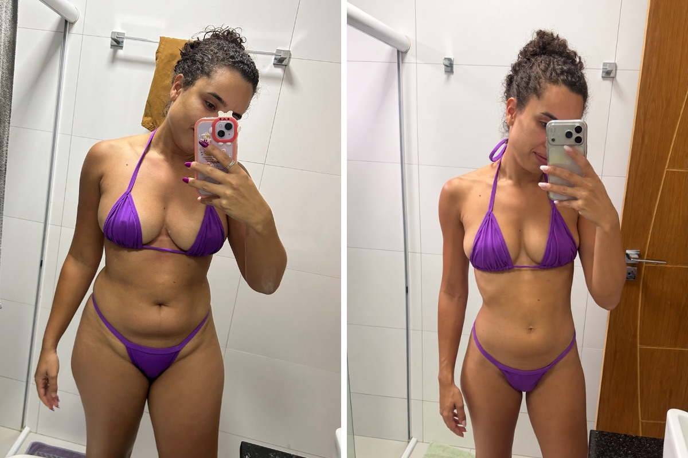
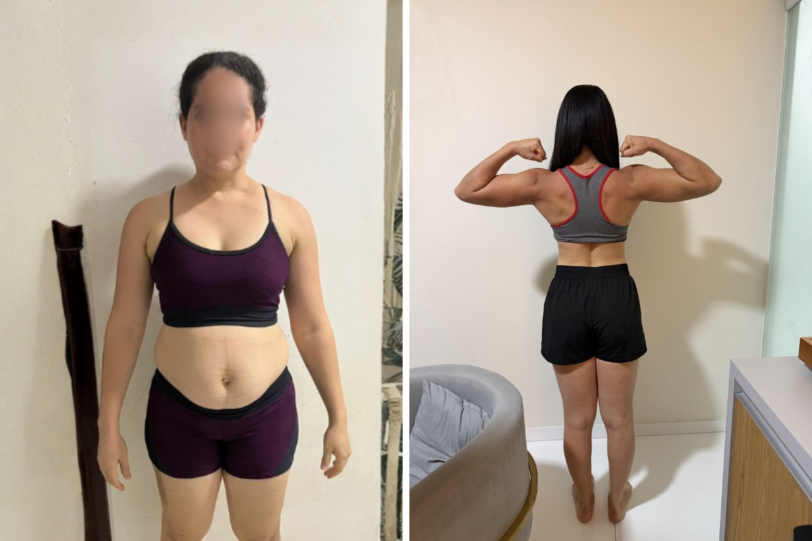
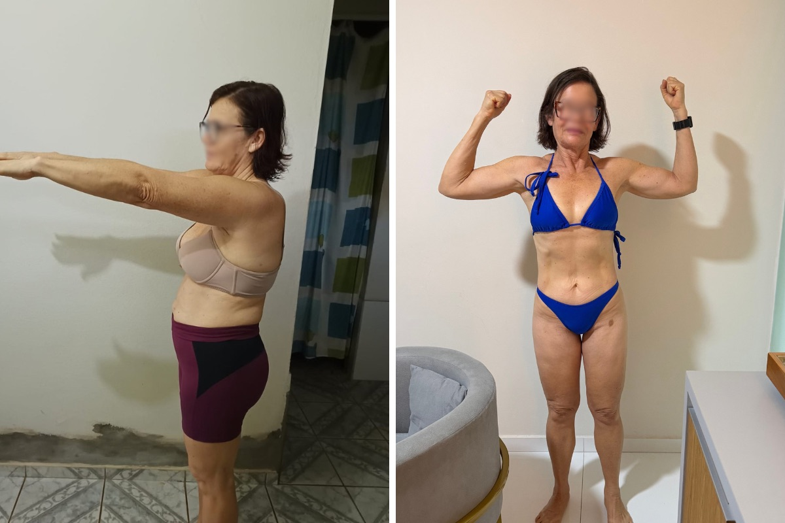
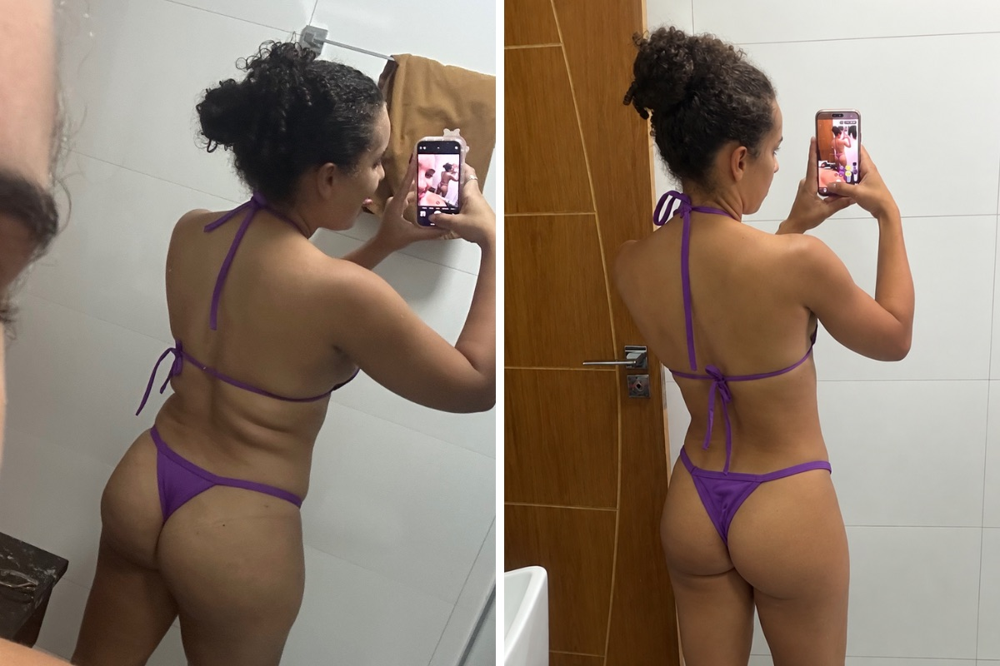
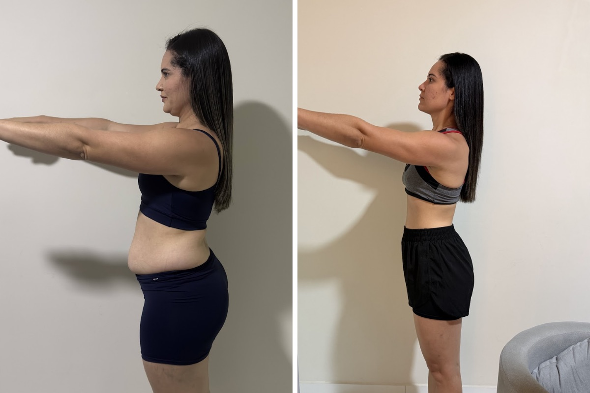
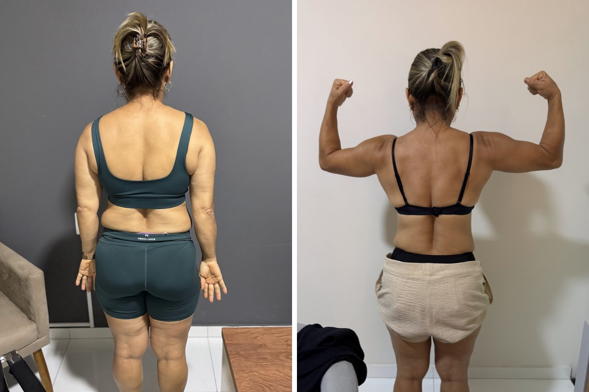
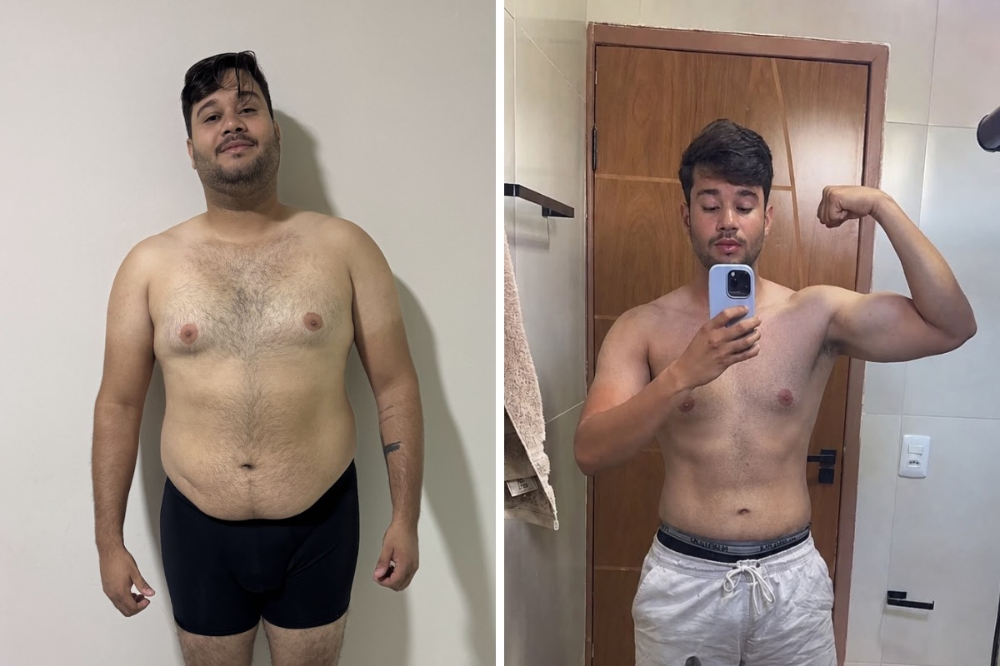

Composição corporal
Medidas para saber de onde você parte.
Acompanhamento nutricional individualizado, feito para a sua rotina.
Quem sou eu
Sou Edson Melo, nutricionista com foco em emagrecimento. Construo cada estratégia a partir da sua rotina, para reduzir gordura preservando massa muscular e criar hábitos que se mantêm.
Não é dieta pronta. É estratégia que cabe na sua vida.
O que você recebe
Medidas para saber de onde você parte.
Análise dos exames para ajustar a conduta com dados.
Plano realista, feito para a sua rotina e para o que você gosta.
Ajustes periódicos conforme a sua evolução.
Canal direto para tirar dúvidas.
Para quem treina: orientação integrada à dieta.
Resultados







Arraste para o lado. Em cada foto, o antes fica à esquerda e o depois à direita. Os resultados variam de pessoa para pessoa.
Depoimentos
"O acompanhamento foi essencial para eu aprender a me alimentar melhor sem precisar seguir uma dieta impossível. Consegui organizar minha rotina, ter mais disposição e perceber mudanças reais no meu corpo e na minha relação com a comida."
A.M. • Paciente
"Já tinha tentado várias dietas antes, mas nunca conseguia manter por muito tempo. Com um plano alimentar pensado para minha rotina, tudo ficou mais simples. Me senti acolhida, orientada e muito mais confiante durante o processo."
L.S. • Paciente
"O que mais gostei foi perceber que não precisava passar fome nem abrir mão de tudo que gosto para ter resultados. O acompanhamento foi personalizado, prático e me ajudou a criar hábitos que consigo manter no dia a dia."
C.R. • Paciente
Atendimento
Online
Praticidade de onde você estiver, com plano individualizado e ajustes periódicos.
Quero o onlinePresencial
Consulta frente a frente, com avaliação completa e orientação próxima.
Quero o presencialPerguntas frequentes
A primeira consulta reúne sua rotina, histórico e objetivos. A partir disso é construída uma estratégia individualizada, com plano alimentar e acompanhamento contínuo.
Porque não é uma dieta pronta. O plano parte da sua rotina, do seu histórico e do que você gosta de comer, com ajustes ao longo do caminho.
A ideia é o contrário: o plano é pensado para caber na sua rotina, sem radicalismos.